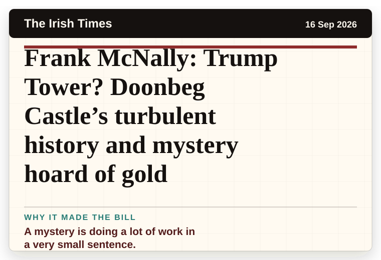
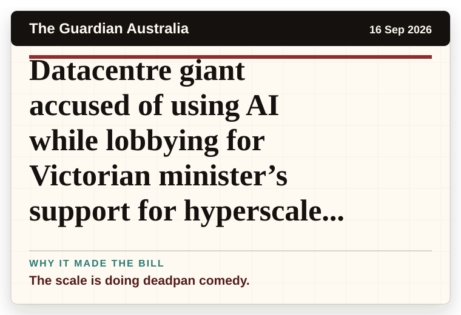

NT News
Australia
Mystery in park: woman found with severe burns
A mystery is doing a lot of work in a very small sentence.
The latest daily picks, linked back to the original sources. Search the room, pick a source, or follow a headline out to the full story.
Record updated: 16 Sep 2026, 07:38 AM AEST
Showing 14 headline candidates from the refresh run completed on 16 Sep 2026, 07:38 AM AEST.
A mystery is doing a lot of work in a very small sentence.

It has the shape of a tiny adventure reported with a straight face.

It has the shape of a tiny adventure reported with a straight face.

It has the shape of a tiny adventure reported with a straight face.

The scale is doing deadpan comedy.

A very ordinary object has wandered into serious news.

The scale is doing deadpan comedy.

A household object has somehow reached the news desk.

The headline is already trying not to laugh.

The scale is doing deadpan comedy.

It has the shape of a tiny adventure reported with a straight face.

A household object has somehow reached the news desk.

A mystery is doing a lot of work in a very small sentence.

The scale is doing deadpan comedy.